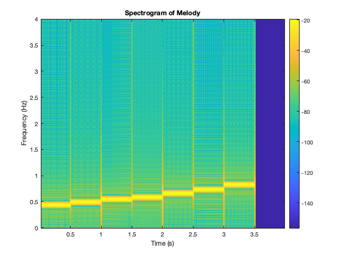
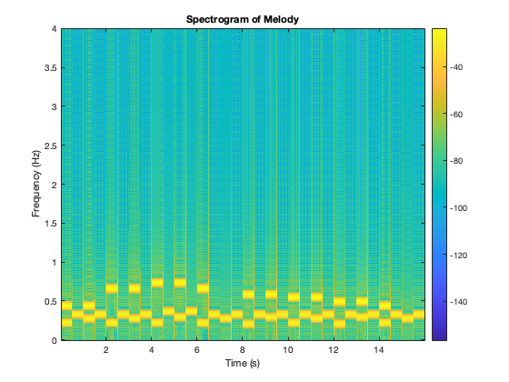
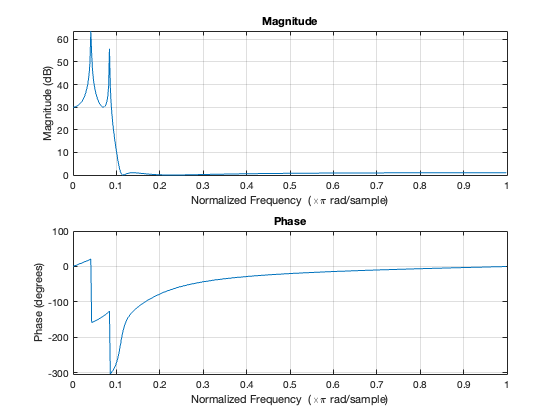

clc;
clear all;
clear fig;
Fs = 8e3;
t = .5;
do=440; re=495; mi=550; fa=587; so=660; la=733; ti=825; nu=0;
table1_notes = [440, 495, 550, 587, 660, 733, 825, 0];
table1_melody = generate_melody(table1_notes, Fs,t);
audiowrite('table1_melody.wav', table1_melody, Fs);
gen_spectro(table1_melody,Fs);
sound(table1_melody, Fs);
dob = 220; reb = 248; mib = 275; fab = 293; sob = 330; lab= 367; tib = 206;
twinkle_notes = [do, nu, do, nu, so, nu, so, nu, la, nu, la, nu, so, nu, nu, nu,...
fa, nu, fa, nu, mi, nu, mi, nu, re, nu, re, nu, do, nu, nu, nu];
chorus_notes = [dob, sob, mib, sob, dob, sob, mib, sob, dob, lab, fab, lab, dob, sob, mib, sob,...
tib, sob, fab, sob, dob, sob, mib, sob, tib, sob, fab, sob, dob, sob, mib, sob];
xmelody = generate_melody(twinkle_notes, Fs, t);
xchorus = generate_melody(chorus_notes, Fs, t);
x = 0.6 * xmelody + 0.4 * xchorus;
audiowrite('twinkle_song.wav', x, Fs);
sound(x,Fs);
gen_spectro(x, Fs);
b = [1, -3.1820023, 3.9741082, -2.293354, 0.52460587];
a = [0.62477732, -2.444978, 3.64114, -2.444978, 0.62477732];
filtered_song = iir_filter(x, a, b);
audiowrite('filtered_song.wav', filtered_song, Fs);
sound(filtered_song,Fs);
figure
freqz(b,a);
[unfiltered_song, ~] = audioread('twinkle_song.wav');
[unfiltered_C_audio, ~] = audioread('C_output_without_filter.wav');
len = min(length(unfiltered_C_audio), length(unfiltered_song));
unfiltered_C_audio = unfiltered_C_audio(1:len) / max(abs(unfiltered_C_audio));
unfiltered_song = unfiltered_song(1:len) / max(abs(unfiltered_song));
l2_error_t6 = norm(unfiltered_C_audio - unfiltered_song) / norm(unfiltered_C_audio);
disp(['Normalized L2 Error for Task 6: ', num2str(l2_error_t6)]);
[filtered_C_audio, ~] = audioread('C_output_with_filter.wav');
[filtered_song, ~] = audioread('filtered_song.wav');
len = min(length(filtered_C_audio), length(filtered_song));
filtered_C_audio = filtered_C_audio(1:len) / max(abs(filtered_C_audio));
filtered_song = filtered_song(1:len) / max(abs(filtered_song));
l2_error_t7 = norm(filtered_C_audio - filtered_song) / norm(filtered_C_audio);
disp(['Normalized L2 Error for Task 7: ', num2str(l2_error_t7)]);
function melody = generate_melody(notes, Fs, t)
num_notes = length(notes);
melody = zeros(1, num_notes * round(t*Fs));
melody_len = 0;
for i = 1:num_notes
note_signal = generate_sigs(notes(i), t, Fs);
note_len = length(note_signal);
melody(melody_len + 1:melody_len + note_len) = note_signal;
melody_len = melody_len + note_len;
end
end
function signal = generate_sigs(f, t, Fs)
t_vec = 0:1/Fs:t;
if f == 0
signal = zeros(size(t_vec));
else
signal = sin(2 * pi * f * t_vec);
end
end
function gen_spectro(sound, Fs)
figure;
spectrogram(sound, 256, 250, 1024, Fs, 'yaxis');
title('Spectrogram of Melody');
xlabel('Time (s)');
ylabel('Frequency (Hz)');
colorbar;
end
function y = iir_filter(x, a, b)
N = length(x);
y = zeros(1, N);
for n = 5:N
y(n) = (a(1) * x(n) + a(2) * x(n-1) + a(3) * x(n-2) + a(4) * x(n-3) + a(5) * x(n-4)) ...
- (b(2) * y(n-1) + b(3) * y(n-2) + b(4) * y(n-3) + b(5) * y(n-4));
end
end
Normalized L2 Error for Task 6: 1.4254
Normalized L2 Error for Task 7: 1.384
  